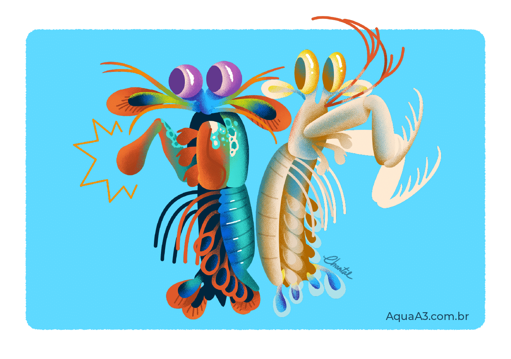

Fatos sobre o Stomatopoda
Conheça o Stomatopoda
| Nome científico | Reino | Filo | Subfilo | Classe | Subclasse | Ordem |
|---|---|---|---|---|---|---|
| Odontodactylus scyllarus | Animalia | Arthropoda | Crustacea | Malacostraca | Hoplocarida | Stomatopoda |
 |
||||||
Stomatopoda é um perfurador e esmagador!
Devido a uma diferença anatômica de seus apêndices, o stomatopoda pode ser classificado em dois grupos: os que têm ataque perfurador (spearers e esmagador (smashers).
Com isso, os esmagadores são considerados um dos animais mais fortes e velozes do planeta, por terem um ataque rápido como uma bala e forte como um touro.
O animal mais forte do mundo
O stomatopoda esmagador possui dois apêndices bem desenvolvidos (semelhantes a um martelo), chamados de Porretes de Dáctilo.
Com essas “super patas” o animal espanca e esmaga suas presas em uma intensidade de aproximadamente 60 kg/cm² (daí o motivo de um de seus nomes ser lagosta-boxeadora).

O animal mais rápido no gatilho
Além da enorme potência de seu soco, esse animal consegue movimentar seus apêndices tal qual um tiro de arma de fogo: seu golpe pode chegar a uma velocidade 720 km/h.
Curiosamente, tanto a força quanto rapidez do ataque, não danificam sua estrutura corporal.

Mais duro que o adamantium?
Devido a habilidades tão únicas, pesquisadores de diversas partes do planeta realizam estudos com o objetivo de entender o mecanismo da força de ataque e o motivo da resiliência do stomatopoda quanto ao forte impacto.

O stomatopoda possui uma super visão
Uma das espécies de stomatopoda (Gonodactylus smithii) têm os olhos mais complexos do reino animal e é capaz de ver cores invisíveis a vários outros animais, do ultravioleta ao infravermelho. A descoberta foi anunciada por cientistas suíços e australianos.
Enquanto nós humanos conseguimos processar somente três tipos de cores primárias (vermelho, verde e azul), esse distinto animal é capaz de enxergar 12 cores primárias porque possui 12 cones de percepção de cor. Os quatro cones restantes, lhe permite enxergar imagens multiespectrais, como a luz ultravioleta.